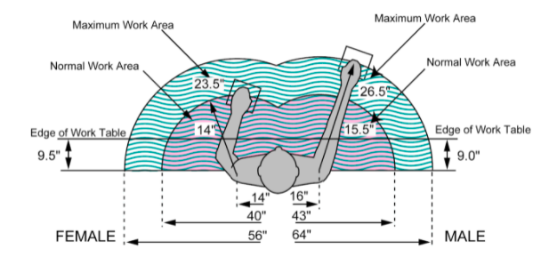
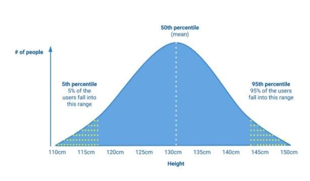

Anthropometric data consists of measurements of the human body--height, weight, arm length, etc. Datasets of anthropometric measurements can come in various forms, populations groups, quality, and sample size . Therefore, the designer should use a data set that is best suited to their design goals.
Primary data is data about the specific target audience that is gathered first hand by designer. This data can also be considered survey data and tends to consist of a relatively small numbers of samples.
Secondary data typically comes from data sets that are produced by government agencies or research groups and have a relatively large sample size.
Regarding reach, measurements are often differentiated as either normal reach or maximal reach. Normal reach would indicate a the distance a user could comfortably extend their arm, while maximal reach indicates the maximum distance they could extend their arm.
The implication is that normal reach would indicate a distance where objects or controls are comfortable and easy to reach with minimal physical stress, and where they can be accessed easily and repeatedly; maximal reach, on the other hand, would be accessible, but would require some effort and not be ideal for repetitive or frequent actions.
When designing a product or service, designers need to determine which Percentiles their product will serve. From this, they can determine specifications such as the physical size or fit, or how much force is required to operate a button.
As each human has distinct physical and mobility characteristics, simply averaging the data collected will not ensure that accessibility or comfort for users. Through collecting primary and secondary data, designers can determine which range of users they need to design for.
See here for a detailed description of interpreting percentiles for designers
What is a percentile? A percentile is used in statistics to show the value below which a certain percentage of a group falls. The 25th percentile is the value at which 25% of the population are at or below.
The 50th percentile is the point at which people half the people in the group (The mean) would be 130cm tall or less would be accommodated. Likewise, if the designer had used just the 5th percentile as their reference, then only those 115cm or shorter would be accommodated.This is where designers must carefully consider who they are designing for and what measurements are important. The design context is important. Consider the 50 percentile (130cm). Even though it is the mean of the user population, it does not include anyone who is above this average.
Application of Percentiles in Design
Consider these different design contexts and how height would play an important role in the design considerations:
In each of these situations, the designer would need to identify which percentile would provide them with the data to meet the design goal. Do they need to consider the tallest or the shortest user in their design context?
FACTORS THAT INFLUENCE ANTHROPOMETRIC MEASUREMENTS
Factors such as Age, Gender, Ethnicity can influence these measurements. For these reasons, designers must carefully consider the source of their data sets and whether they are applicable to the design context.
USING ANTHROPOMETRIC MEASUREMENTS
Follow these steps for identifying the data and percentile ranges you will use (adapted from here).
Footer